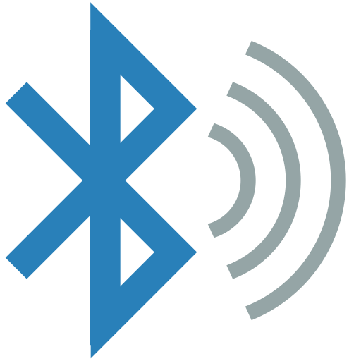

Bluetooth Testing
Desde wearables hasta teclados y sistemas de manos libres. El T-Embed permite explorar tanto el Bluetooth clásico como el de bajo consumo (BLE), identificando dispositivos e interactuando con sus servicios.
Bluetooth Classic vs BLE
Aunque comparten el nombre, son tecnologías muy distintas bajo el capó. El ESP32-S3 del T-Embed soporta ambas, lo que nos permite realizar pruebas en un amplio abanico de dispositivos.
- Bluetooth Classic (BR/EDR): Diseñado para transmisiones continuas de datos. Auriculares, transmisión de audio y transferencia de archivos. Consume mucha energía.
- Bluetooth Low Energy (BLE): Optimizado para dispositivos que funcionan con batería durante meses. Sensores, relojes inteligentes y balizas. Funciona mediante "anuncios" (Advertising) y servicios GATT.

Técnicas de Auditoría con Bruce
BLE Spam (Sour Apple)
Este ataque simula paquetes de emparejamiento legítimos de Apple (o Android). El T-Embed emite anuncios BLE masivos que hacen que los dispositivos cercanos muestren pop-ups constantes de emparejamiento.
Es una técnica de denegación de servicio a nivel de interfaz de usuario. Muy efectivo en espacios públicos para demostrar la inseguridad de los protocolos de proximidad.
BLE Scanner / Sniffing
Bruce permite capturar los paquetes de anuncio que los dispositivos BLE emiten constantemente para ser encontrados. El T-Embed muestra el nombre, la MAC y los servicios que ofrece cada dispositivo en tiempo real.
Muchas cerraduras inteligentes y sensores IoT "gritan" su presencia y fabricante mediante estos paquetes sin necesidad de conexión.
Identity Spoofing
El T-Embed puede clonar la identidad de un dispositivo Bluetooth conocido Cambiando su nombre y dirección MAC. Se utiliza para engañar a usuarios o a otros dispositivos que confían en una ID específica.
Proximity Monitoring
Monitoriza la potencia de la señal (RSSI) de un dispositivo específico. Útil para rastrear la ubicación física de una persona o dispositivo (relojes inteligentes, trackers) basándose en la cercanía al T-Embed.
WiFi vs Bluetooth LE: Comparativa Técnica
| Característica | WiFi (802.11) | Bluetooth LE (BLE) | Notas para Pentesting |
|---|---|---|---|
| Frecuencia | 2.4 GHz / 5 GHz | 2.4 GHz | Ambos comparten espectro y pueden interferirse. |
| Alcance | Hasta 100m | Hasta 10-20m | Bluetooth requiere mayor cercanía física del T-Embed. |
| Consumo | Alto | Muy bajo | El modo BLE agota menos la batería del T-Embed. |
| Topología | Estrella (Cliente-AP) | Maestro/Esclavo o Malla | BLE es más dinámico en sus conexiones rápidas. |
| Cifrado | WPA2 / WPA3 | AES-128 (Opcional) | Muchos dispositivos BLE transmiten datos sin cifrar. |
Concepto: GATT y Características
A diferencia del WiFi, donde intercambiamos archivos o streams, en BLE se utiliza el protocolo GATT (Generic Attribute Profile). Es como una base de datos de "etiquetas" que puedes leer o escribir.
Un dispositivo (Servidor GATT) ofrece Servicios (ej. Monitor cardíaco) y dentro de esos servicios hay Características (ej. Valor de Pulsaciones).
Con el T-Embed y Bruce podemos listar estos servicios e intentar leer sus valores. Si el desarrollador no implementó seguridad, cualquier dispositivo puede leer datos sensibles o incluso escribir configuraciones maliciosas.
Aviso sobre Seguridad Bluetooth
Interactuar con dispositivos de terceros mediante Bluetooth puede ser invasivo. Capturar datos de salud o deportivos de personas sin su permiso es una violación grave de la privacidad. Usa estas herramientas solo en tus propios dispositivos o con consentimiento explícito.